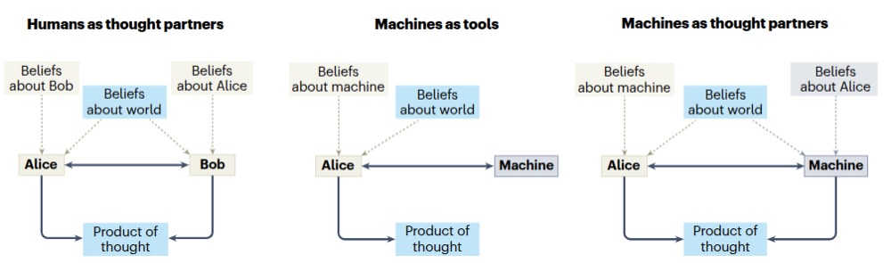
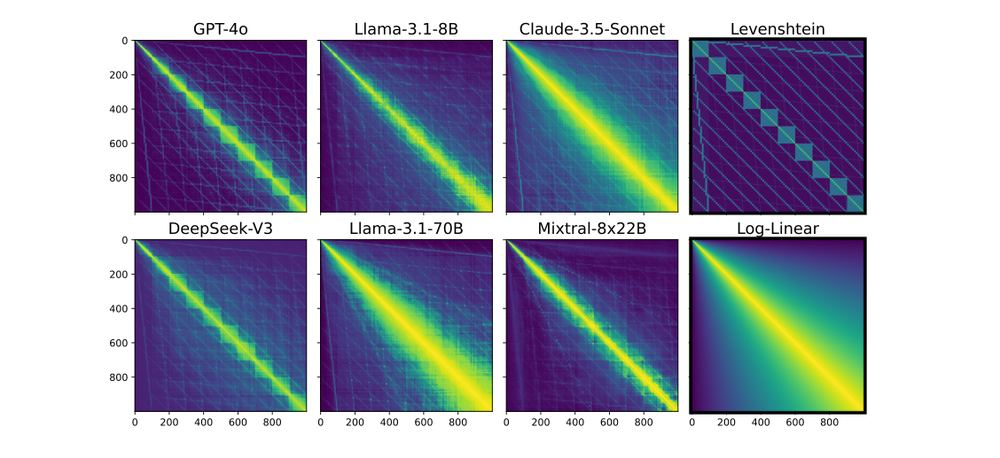
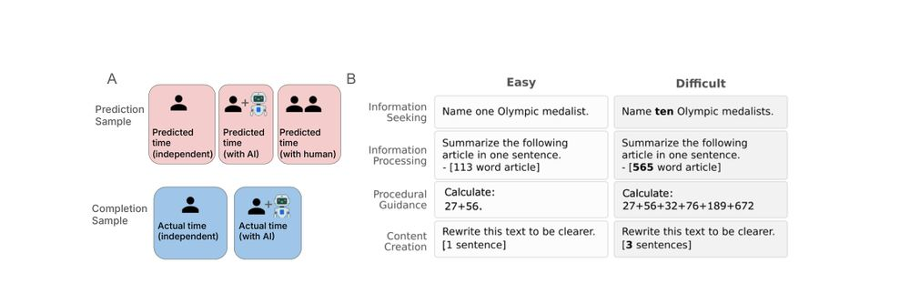
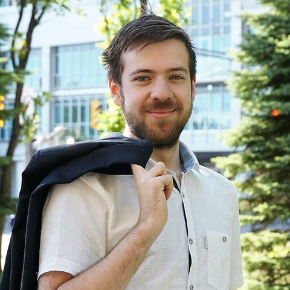

Machines that think with people, not instead of them.
AI could make people more capable, more creative, better at working together, and more in control of their own decisions.
What we studyRecruiting PhD students for Fall 2027. Applications due December 1. Join the lab

What we mean by a thought partner.
A thought partner is a system that thinks with you rather than for you. In the 2024 paper that set out the idea, that takes three things: the system has a model of you, you can understand it, and the two of you share a model of the world. Our research asks what a system must understand about individuals, pairs, and groups to be that kind of partner.
A partner needs an accurate model of the person.
People do not represent, perceive, choose or judge the way idealised agents do. A system can reproduce a person's answers without recovering the concepts and preferences behind them, so we measure what a particular person actually represents.
Try it: how do you represent colour?
We measure how a mind represents things by asking about similarity: which of two items is closer to a third. Answer sixteen of those and your similarity structure appears beside Claude Fable 5.1's, collected with the question used in Large language models predict human sensory judgments across six modalities (Scientific Reports, 2024), where GPT-4's colour judgments reached r = .84 with people's.
Your similarity matrix
Claude Fable 5.1
A model's concepts and habits are not ours, so we study it like a subject.
The tasks cognitive science built to study people work on models too, and they show concepts, reasoning habits and failure modes a partner has to know about.

What two minds share sets how little has to be said.
Representational alignment is how much two agents agree about what is similar to what. It sets the cost of learning from each other, and the floor on that cost is lower than most people expect.
Try it: teach a student who sees the world differently, in as few messages as you can.
Eight familiar objects sit on a map, and a new one is hidden. You can see it; a student cannot. You may only send messages of one form, "it is closer to A than to F", and the student reads each one on its own map, which differs from yours and stays hidden. The theorem behind this, in Alignment with human representations supports robust few-shot learning (NeurIPS 2023), says the cost of teaching grows as the two maps drift apart.
The partnership is the thing to measure, not the person or the model alone.
Whether AI help leaves someone more capable, how they take its advice, and what it costs them are properties of the pair.

A good partner for one person is not automatically good for the group.
A partnership that helps one person may not improve a team or a population. Collective outcomes depend on how information, expertise, and deference are organised, whether the members are people, AI systems, or both.
Try it: search for a hidden high point as one member of a group of three.
Somewhere in the square is a hidden high point. You and two simulated searchers look for it together: every guess, yours and theirs, appears on the square with its height from 0 to 100, and everyone can build on everyone else's. One searcher only explores; the other only exploits the group's best guess so far. In Human-AI Synergy Supports Collective Creative Search (CogSci 2026), groups that mixed people and language models found good guesses soonest and reached the highest scores.
News
Papers


People

Ilia Sucholutsky is an Assistant Professor of Computer Science at Purdue University, where he leads the AI Thought Partner Lab in developing AI that thinks with people rather than instead of them. His research asks what a system must understand about individuals, pairs, and groups to be a good partner, using a combination of theory, simulation, and large-scale human-AI studies. He is also co-PI on the DARPA In the Moment program on algorithmic trust and previously held positions at NYU and Princeton.
Purdue Ilia Sucholutsky, Mihir Upadhyay, Uma Kulkarni, Yinqi (Bill) Sun, Xiao Hu, Abel Gurung, Amir Tahmasbi.
New York Sevan Harootonian, Divya Srinivasan.
Join
Prospective PhD students apply through Purdue Computer Science and name the lab and PI in their statement, with a paragraph on the question they want to work on. We look for evidence of independent research thinking; a background in cognitive science or behavioural experiments helps but is not required. Purdue undergraduates and master's students can join a running study for a semester.
How to applyQuestions to Ilia Sucholutsky, Department of Computer Science, Purdue University, isucholu@purdue.edu.